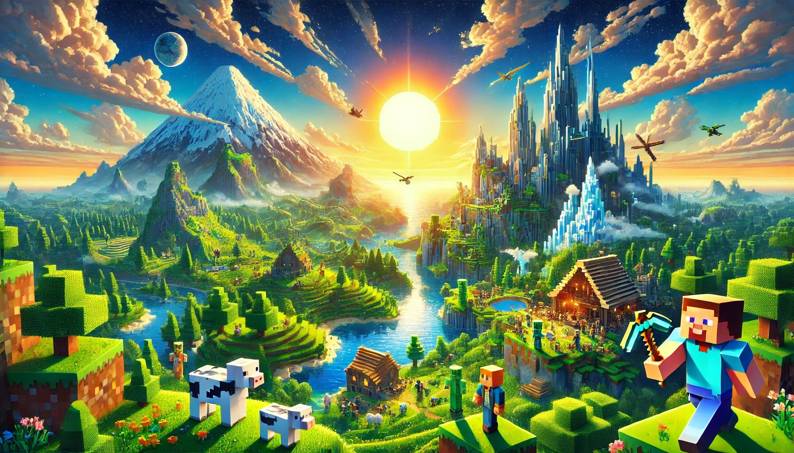

If you’re a game lover, chances are you’ve heard of Minecraft. If you haven’t, well, where have you been? Living under a blocky rock? Minecraft is not just a game; it’s a phenomenon. It’s the digital equivalent of LEGO, but with endless possibilities, monsters, and the occasional creeper that sneaks up on you when you least expect it. Whether you’re a seasoned gamer or someone who just likes to unwind with a fun and creative experience, Minecraft is the ultimate choice. Let’s dive into why Minecraft is the best game for game lovers, and why it deserves a permanent spot in your gaming library.
Minecraft apk is like a blank canvas, but instead of paint, you have blocks. And instead of a canvas, you have an entire world. The game gives you the tools to create anything you can imagine. Want to build a castle? Go for it. How about a rollercoaster that stretches across the map? Sure, why not! Maybe you’re feeling ambitious and want to recreate the Eiffel Tower or the entire city of New York. In Minecraft, the only limit is your imagination (and maybe how much coffee you’ve had to stay awake).
The creative mode is perfect for those who just want to build without worrying about monsters or survival. It’s like having unlimited LEGO bricks, but without the pain of stepping on them. For game lovers who enjoy expressing their creativity, Minecraft is a dream come true.
If you’re someone who loves a good challenge, Minecraft’s survival mode has got you covered. You start with nothing but your fists and a world full of resources to gather. You’ll need to mine, craft, and build to survive the night, because when the sun goes down, the monsters come out. Zombies, skeletons, and creepers (oh my!) will keep you on your toes.
Survival mode is perfect for gamers who love strategy and resource management. You’ll need to think ahead, plan your moves, and maybe even build a few traps to keep those pesky mobs at bay. It’s like a mix of strategy, adventure, and a little bit of horror (seriously, creepers are terrifying).
Minecraft is even better when you play with friends. Whether you’re teaming up to survive the night or competing to build the most ridiculous structure, multiplayer mode adds a whole new layer of fun. You can join public servers, create your own private world, or even play split-screen on consoles. It’s a great way to connect with friends, family, or even strangers who share your love for the game.
And let’s be honest, everything is more fun with friends. Need to mine a mountain? Call your buddy. Want to build a giant statue of a chicken? Get the gang together. Minecraft’s multiplayer mode turns the game into a social experience that’s hard to beat.
One of the best things about Minecraft is that it’s constantly evolving. The developers at Mojang are always adding new features, blocks, mobs, and biomes to keep the game fresh and exciting. Whether it’s a new cave update, a new type of villager, or a whole new dimension to explore, there’s always something to look forward to.
This means that even if you’ve been playing Minecraft for years, there’s always something new to discover. It’s like getting a new game every few months, but without having to spend extra money (unless you want to, of course).
Believe it or not, Minecraft isn’t just fun—it’s educational too. The game teaches problem-solving, creativity, and even basic coding skills. There’s a reason why schools are using Minecraft as a teaching tool. It’s a great way to learn about geometry, architecture, and resource management in a fun and engaging way.
For parents, Minecraft is a win-win. Your kids are having fun, but they’re also learning valuable skills. And who knows, maybe they’ll be inspired to become the next great architect or game designer.
Minecraft is available on pretty much every platform you can think of: PC, consoles, mobile devices, and even VR. The best part? Many versions of the game support cross-platform play. This means you can play with your friends no matter what device they’re using. Whether you’re on a PlayStation, Xbox, Nintendo Switch, or your phone, you can join the same world and play together.
This level of accessibility makes Minecraft one of the most inclusive games out there. No matter where you are or what device you have, you can jump into the world of Minecraft and start building.
If the base game isn’t enough for you, Minecraft has a thriving modding community. Mods (short for modifications) are user-created content that can change or enhance the game. Want to add new creatures, tools, or even entire dimensions? There’s probably a mod for that.
Mods allow you to customize your Minecraft experience to suit your preferences. Whether you want to make the game more challenging, more realistic, or just plain silly, there’s a mod out there for you. And if you’re feeling particularly tech-savvy, you can even create your own mods.
Sometimes, you just want to unwind after a long day. Minecraft is perfect for that. There’s something incredibly calming about mining resources, building structures, and exploring the world. The game’s simple graphics and soothing soundtrack create a relaxing atmosphere that’s perfect for de-stressing.
And if you’re feeling really zen, you can just sit back and watch the sun set over your blocky world. It’s like a digital vacation, but without the hassle of packing or airport security.
Minecraft isn’t just a game; it’s a cultural phenomenon. The game has a massive and passionate community of players, creators, and fans. From YouTube videos to Twitch streams, fan art to memes, Minecraft has inspired a whole world of content.
Being part of the Minecraft community means you’re part of something bigger. Whether you’re sharing your latest build, watching a speedrun, or just chatting with other fans, there’s a sense of camaraderie that comes with being a Minecraft player.
One of the best things about Minecraft is that it appeals to players of all ages. Kids love it for its creativity and simplicity, while adults appreciate its depth and complexity. It’s a game that you can grow with, and one that never really gets old.
Whether you’re 8 or 80, Minecraft has something for you. It’s a game that brings people together, no matter their age or background. And let’s be honest, who doesn’t love a game where you can build a giant castle and then blow it up with TNT?
Unlike many other games, Minecraft doesn’t pressure you to complete objectives or follow a strict storyline. You can play at your own pace, whether that means spending hours building a masterpiece or just casually exploring the world. There’s no right or wrong way to play Minecraft, and that’s part of what makes it so special.
For game lovers who want a break from the fast-paced, high-pressure world of competitive gaming, Minecraft is a breath of fresh air. It’s a game that lets you relax, take your time, and enjoy the journey.
With its procedurally generated worlds, Minecraft offers endless replayability. No two worlds are the same, which means you’ll always have something new to explore. Whether you’re digging deep into caves, sailing across oceans, or climbing towering mountains, there’s always something new to discover.
And even if you’ve explored every corner of your world, you can always start a new one. With infinite possibilities, Minecraft never gets old.
At the end of the day, Minecraft is just plain fun. It’s a game that lets you be creative, adventurous, and silly all at the same time. Whether you’re building a masterpiece, battling monsters, or just goofing around with friends, Minecraft is guaranteed to put a smile on your face.
And isn’t that what gaming is all about? Having fun, making memories, and maybe blowing up a few things along the way.
Minecraft is more than just a game; it’s an experience. It’s a world where you can be whoever you want, do whatever you want, and create whatever you can imagine. Whether you’re a casual gamer or a hardcore enthusiast, Minecraft has something for everyone.
So, if you’re looking for a game that’s fun, creative, and endlessly entertaining, look no further than Minecraft. It’s the best choice for game lovers, and it’s easy to see why. Now, if you’ll excuse me, I have a castle to build. And maybe a giant chicken statue. Who knows? In Minecraft, anything is possible.